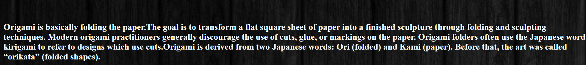

ORIGAMI PASSIONATES-2


Camel
FACTS ABOUT CAMEL:-
- it is also called "the ship of the desert".
- It's hooves prevent it from sinking in sand.
- It has thick eyelashes to prevent sand from entering its eyes.
- It has 3 sets of eyelids.
- It can drink up to 40 gallons in one go.

Flying-Cicada
FACTS ABOUT CICADAS:-
- It has one of the longest insect lifespans.
- More than 3,000 species of this exist.
- They together can buzz louder than a lawnmower.
- Their wings repel water and bacteria.
- Cicadas are not locusts.

Chameleon
FUN FACTS ABOUT CHAMELEONS:-
- Chameleons have eyes in the backs of their heads.
- Chameleons have extremely powerful tongues.
- Chameleons have good eyesight for a lizard.
- 44% Chameleons of world are found in Madagascar.
- They have a short lifespan.

Panda
FUN FACTS ABOUT PIGEONS:-
- Pigeons are highly sociable animals.
- Pigeons and humans have lived in closely for thousands of years.
- Their fastest recorded flying speed is 92.5 mph.
- They are often seen in flocks of 20-30 birds.
- Pigeons are renowned for their outstanding navigational abilities.

Pigeon
FUN FACTS ABOUT TEDDY:-
- A kind of soft toy.
- Available in different sizes.
- Available in different colours.
- No facts
- No facts

Teddy
FUN FACTS ABOUT GIANT PANDAS:-
- Giant pandas have vertical slits for pupils.
- At 5 months old, giant pandas learn how to climb.
- Giant pandas spend 10-16 hours a day feeding.
- Their black-and-white markings help camouflage.
- They feed mainly bamboo.